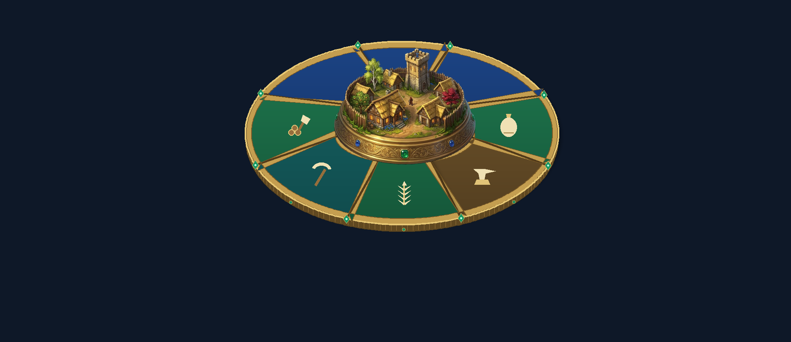
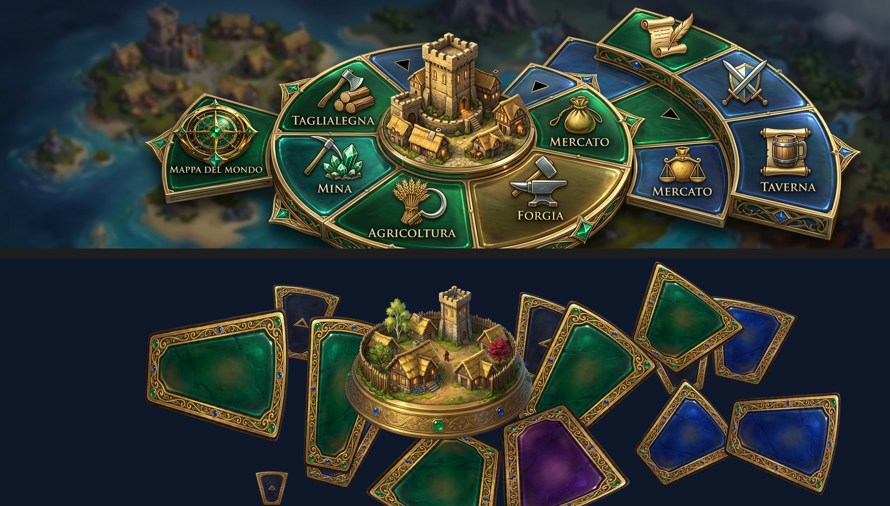
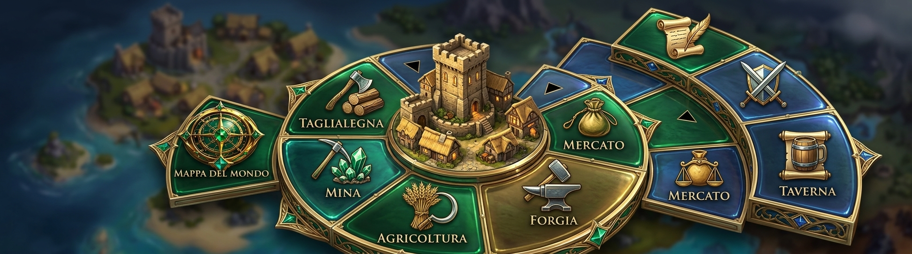
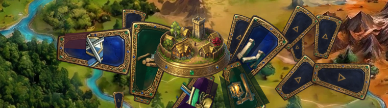
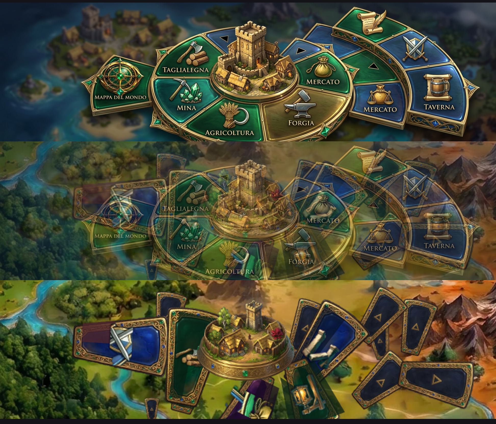

v65 — MODELLO BATTEZZATO (anello ellittico di spicchi) — quello su cui hai detto "procedi"

v8 — composito carte misurate vs mockup (sopra mockup, sotto composito)

MOCKUP approvato

RENDER LIVE attuale (componente nel lab)

Overlay mockup/blend/render
